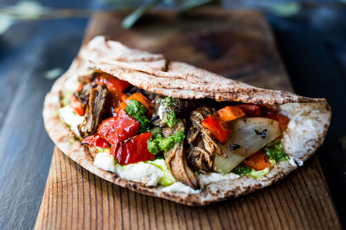

How to make Lamb Shawarma

This recipe yields an absolutely amazing tasting and tender final product. Shawarma can be used in pitas, be put on fattoush, on hommus, or eaten plain.
Ingredients
- 3 pounds lamb leg, boneless
- one large onion, sliced into thick ½ inch slices
- 6 tablespoons olive oil
- Shawarma Marinade
- Mayonnaise and ketchup (why not right?)
Steps
- Place the yogurt, water, lemon juice, vinegar, olive oil, onion, and garlic into a large mixing bowl.
- Whisk in the salt, black pepper, cumin, nutmeg, clove, mace, and cayenne pepper until evenly blended.
- Heat a large skillet over high heat.
- Cook the lamb strips in a single layer in batches until the fat melts and the meat has browned and is no longer pink on the inside, about 5 minutes, turning occasionally.
Return to Odin Recipes